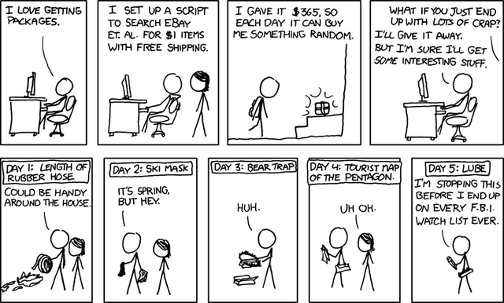

Britain's Youth Jobs Plan Arrives With a Bill Attached
Milburn's verdict lands tomorrow, the NHS revolts over zero-hours, and an AI can now pay for things.
UK weather
UK news
 Burnham promises a
“root-and-branch rethink of childhood” ahead of Milburn’s
report — Alan Milburn publishes his review into young people
and work tomorrow, and the prime minister has spent the weekend setting
expectations for it, pledging early intervention years before anyone
signs on and a “benefits backstop” alongside nearly half a million job
and education opportunities over a decade. Almost a million young people
are not in education, employment or training, so the political question
is no longer whether the benefits bill gets reshaped but who absorbs the
cost of it. Guardian
Burnham promises a
“root-and-branch rethink of childhood” ahead of Milburn’s
report — Alan Milburn publishes his review into young people
and work tomorrow, and the prime minister has spent the weekend setting
expectations for it, pledging early intervention years before anyone
signs on and a “benefits backstop” alongside nearly half a million job
and education opportunities over a decade. Almost a million young people
are not in education, employment or training, so the political question
is no longer whether the benefits bill gets reshaped but who absorbs the
cost of it. Guardian
 NHS and fire chiefs tell ministers the
zero-hours ban puts the public at risk — Health and fire
service leaders have joined forces to warn that outlawing zero-hours
contracts would leave them unable to hire emergency cover without
guaranteeing hours or paying for late shift changes, with NHS Employers
putting the annual bill for trusts at as much as £900m. They want a
rethink before the rules come in next year; the government says it is
considering consultation responses. A manifesto promise meeting a rota,
which never ends well for the rota. LBC
NHS and fire chiefs tell ministers the
zero-hours ban puts the public at risk — Health and fire
service leaders have joined forces to warn that outlawing zero-hours
contracts would leave them unable to hire emergency cover without
guaranteeing hours or paying for late shift changes, with NHS Employers
putting the annual bill for trusts at as much as £900m. They want a
rethink before the rules come in next year; the government says it is
considering consultation responses. A manifesto promise meeting a rota,
which never ends well for the rota. LBC
UK television
 I’m A Celebrity returns
tonight — Ant and Dec are back in Australia for the launch at
9pm on ITV1 and ITVX, with last year’s run having averaged 8.7m viewers
and reached 23.4m people across platforms. A show now in its third
decade as the closest thing British telly has to a fixed point in the
calendar. Vibe
107.6
I’m A Celebrity returns
tonight — Ant and Dec are back in Australia for the launch at
9pm on ITV1 and ITVX, with last year’s run having averaged 8.7m viewers
and reached 23.4m people across platforms. A show now in its third
decade as the closest thing British telly has to a fixed point in the
calendar. Vibe
107.6
 Channel 4 gives Nicola Coughlan
two nights to herself — “I Am Helen”, a two-part drama, starts
at 9pm tonight and concludes tomorrow, part of a week where the
schedules quietly fill up with prestige drama ahead of December. Geektown
Channel 4 gives Nicola Coughlan
two nights to herself — “I Am Helen”, a two-part drama, starts
at 9pm tonight and concludes tomorrow, part of a week where the
schedules quietly fill up with prestige drama ahead of December. Geektown
Pokémon
 Dynamax Trails opens today, and
Eternatus is back at the centre of it — The event runs from
10am local time today until 8pm on the 23rd, bringing every Dynamax
Pokémon seen in the game so far back into circulation, Max Particles
surging in the wild, and Eternatus returning to Power Spots with an
Eternamax showdown pencilled in for the 21st. A week-long rerun aimed
squarely at anyone who missed the Max roster the first time. Leek
Duck
Dynamax Trails opens today, and
Eternatus is back at the centre of it — The event runs from
10am local time today until 8pm on the 23rd, bringing every Dynamax
Pokémon seen in the game so far back into circulation, Max Particles
surging in the wild, and Eternatus returning to Power Spots with an
Eternamax showdown pencilled in for the 21st. A week-long rerun aimed
squarely at anyone who missed the Max roster the first time. Leek
Duck

Tabletop games
Games Workshop nuked the rules data behind every army builder — A DMCA notice naming 37 repositories took down the BSData project, the volunteer-maintained points and datasheet files that an enormous number of list-building apps quietly depend on. Whatever you think of free rules data, the practical effect is that a lot of people’s army lists stopped working over the weekend, and the hobby’s own duplicate of it is gone. Spikey Bits
The Christmas boxes went live, and the Orks are among the shorted ones — Pre-orders opened worldwide, and allocation has already capped the Battleforces everyone wants while reps ring round offering extra copies of the rest. The Ork Armoured Blitzmob — Warboss in Mega Armour, a Battlewagon, a Deff Dread, three Meganobz and ten Boyz — is the box this section cares about, and it is not the one being pushed. Spikey Bits
Sci-fi and fantasy
 Star Trek: Scouts is three
minutes of holodeck chaos, and it is quietly working — The Nick
Jr.-adjacent animated series, launched on Star Trek Day, has reached its
eighth episode: Andorian blueberries, a slime-flinging rival from the
Academy, and a rescue that resolves in under three minutes. Thirty of
them in season two, three minutes each, on Nickelodeon’s YouTube
channel. The franchise’s future on television is uncertain; its future
for six-year-olds is not. TrekMovie
Star Trek: Scouts is three
minutes of holodeck chaos, and it is quietly working — The Nick
Jr.-adjacent animated series, launched on Star Trek Day, has reached its
eighth episode: Andorian blueberries, a slime-flinging rival from the
Academy, and a rescue that resolves in under three minutes. Thirty of
them in season two, three minutes each, on Nickelodeon’s YouTube
channel. The franchise’s future on television is uncertain; its future
for six-year-olds is not. TrekMovie
Tech
AI — OpenAI wants your agent to have a wallet, with your thumb on the trigger — ChatGPT Wallet lets an agent complete a purchase after you approve the items, total and card via Face ID or fingerprint, with the payment network substituting a temporary card number so neither the agent nor the merchant ever sees the real one. Built with American Express, Mastercard and Visa, it starts with US Pro subscribers, and the planned next step is pre-approved spending limits. Every safeguard here is a good idea and every one will eventually be described as friction. OpenAI
AI — the Fed now counts AI as its biggest financial stability worry — 87% of contacts in the Federal Reserve’s latest survey named AI-related risk, up from 50% in May, citing complex financing arrangements, cyber threats and the possibility of a correction if AI earnings disappoint. A central bank describing your industry as its top systemic concern is the sort of citation nobody puts on the website. Reuters
Linux — a busy week ends with Firefox 160, Steam’s 64-bit move and RHEL 10.3 — Firefox 160 ships Mini Window, MathML in PDFs and playback-speed settings for picture-in-picture; Steam’s client moved to 64-bit support; and Red Hat released RHEL 10.3 on the 6.12 kernel with GCC 16 and sealed images. Quietly, most of the desktop stack changed underneath everyone in seven days. 9to5Linux
Android — a week after the Pixel Drop, plenty of Pixels still haven’t got it — Google announced the November update on the 10th, and owners are still reporting no OTA, with the rollout apparently staged over several weeks. Those who do have it are on Android 17 QPR2 with roughly 33 functional fixes and a batch of new features. A staged rollout is defensible until it’s your phone waiting. Android Authority
 macOS — the 27.3 beta
cycle rolls on — Apple has seeded 27.3 betas across iOS,
iPadOS, macOS, tvOS, visionOS and watchOS for developers, with the
public release of 27.3 not expected until December. Meanwhile 27.2.1,
out on the 9th, remains the version to actually run. Apple Developer
macOS — the 27.3 beta
cycle rolls on — Apple has seeded 27.3 betas across iOS,
iPadOS, macOS, tvOS, visionOS and watchOS for developers, with the
public release of 27.3 not expected until December. Meanwhile 27.2.1,
out on the 9th, remains the version to actually run. Apple Developer
Hardware — the smallest Meshtastic node gets a printable case — Seeed Studio’s XIAO ESP32S3 paired with a Wio-SX1262 is about as small as a usable LoRa node gets, and there’s now a 3D-printable enclosure for it that doubles as a sensor-node housing or a single-channel gateway. The sort of project that costs an evening and then quietly lives in a coat pocket for years. Adafruit
The week’s unifying theme is approval: the agent asks before spending, the PM asks before reshaping benefits, the NHS asks before the rota changes, and the Fed asks whether anyone has thought this through. The Borg deck does not ask, which is why it’s the healthiest of the four.
In season — November: Rosehips, Winter Cress, Sloes.
A calendar nudge, not identification — check a proper field guide before eating anything. Source
Live now; make now always the most precious time. Now will never come again.
— Jean-Luc Picard, Star Trek: The Next Generation, 'The Inner Light'